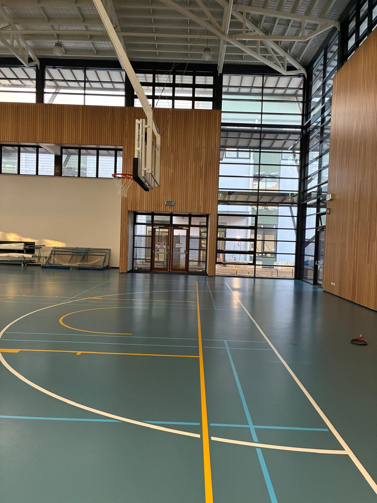

Wet vs dry testing
Why wet pendulum and dry floor friction testing assess different conditions and why one does not automatically replace the other.
Read the service overview →Acknowledgement of CountryPrime Safety & Compliance Services Pty Ltd acknowledges the Traditional Custodians of the lands on which we live and work. We pay our respects to Aboriginal and Torres Strait Islander Elders past, present and emerging, and recognise their continuing connection to land, waters and community.
Short, practical topics drawn from the Prime Safety Phase 2 content plan for WA facilities and property managers.

Send us your site details and preferred timing. We can help clarify the appropriate testing scope.